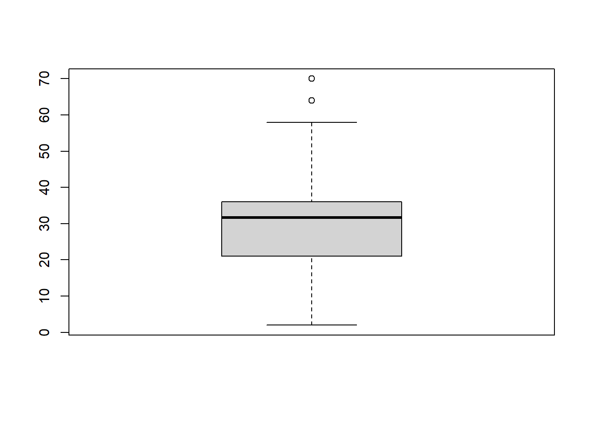
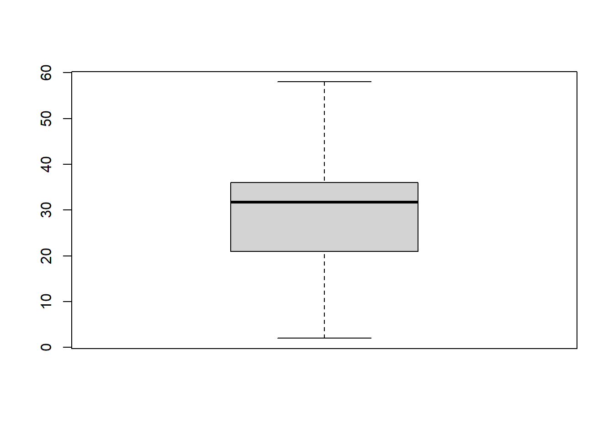

# This is an R chunk for reading the WHO data and check the dimension of the original dataset. R codes as below:
WHO <- read.csv("src/R/data/WHO.csv", stringsAsFactors = FALSE)
dim(WHO)## [1] 7240 60# R chunk for Task 1:
#Reshape column 5 - 60 into a long format, as a new single column (a.k.a varibale) "code", we should have transformed 1 set of 7240 observations to 60-5+1, i.e. 56 set of 7240 observations.
WHO <- WHO %>% gather(code, value, 5:60)
#show the first 6 rows of the transformed WHO dataset
head(WHO)## country iso2 iso3 year code value
## 1 Afghanistan AF AFG 1980 new_sp_m014 NA
## 2 Afghanistan AF AFG 1981 new_sp_m014 NA
## 3 Afghanistan AF AFG 1982 new_sp_m014 NA
## 4 Afghanistan AF AFG 1983 new_sp_m014 NA
## 5 Afghanistan AF AFG 1984 new_sp_m014 NA
## 6 Afghanistan AF AFG 1985 new_sp_m014 NA#show the dimension of the transformed WHO dataset
dim(WHO)## [1] 405440 6# R chunk for Task 2:
#separate the multi-variable code into "new", "car", "sexage" as these can be splitted by the separator character "_"
WHO <- WHO %>% separate(code, c("new", "var", "sexage"), sep="_")
#separate the "sexage" variable by stripping the first character as "sex", due to the first character in this column denotes the sex, the rest would denote the age
WHO <- WHO %>% separate(sexage, c("sex","age"), sep = 1)
#show the first 6 rows of the WHO dataset
head(WHO)## country iso2 iso3 year new var sex age value
## 1 Afghanistan AF AFG 1980 new sp m 014 NA
## 2 Afghanistan AF AFG 1981 new sp m 014 NA
## 3 Afghanistan AF AFG 1982 new sp m 014 NA
## 4 Afghanistan AF AFG 1983 new sp m 014 NA
## 5 Afghanistan AF AFG 1984 new sp m 014 NA
## 6 Afghanistan AF AFG 1985 new sp m 014 NA#show the dimension of the WHO dataset
dim(WHO)## [1] 405440 9# R chunk for Task 3:
#transform the var column from long format to wide format, there are 4 distinct values (“rel”, “ep”, “sn”, and “sp”) in the var column
WHO <- WHO %>% spread(key=var, value = value)
#show the first 6 rows of the WHO dataset
head(WHO)## country iso2 iso3 year new sex age ep rel sn sp
## 1 Afghanistan AF AFG 1980 new m 014 NA NA NA NA
## 2 Afghanistan AF AFG 1981 new m 014 NA NA NA NA
## 3 Afghanistan AF AFG 1982 new m 014 NA NA NA NA
## 4 Afghanistan AF AFG 1983 new m 014 NA NA NA NA
## 5 Afghanistan AF AFG 1984 new m 014 NA NA NA NA
## 6 Afghanistan AF AFG 1985 new m 014 NA NA NA NA#show the dimension of the WHO dataset
dim(WHO)## [1] 101360 11# R chunk for Task 4:
#Use mutate to factorize age and sex in one statement
WHO <- WHO %>% mutate(sex=factor(sex, levels=c("m","f")),age=factor(age, levels=c("014","1524","2534", "3544", "4554", "5564", "65"), labels = c("<15", "15-24", "25-34", "35-44", "45-54", "55-64","65>="), ordered = TRUE))
#show the first 20 rows of the WHO dataset
head(WHO, 20)## country iso2 iso3 year new sex age ep rel sn sp
## 1 Afghanistan AF AFG 1980 new m <15 NA NA NA NA
## 2 Afghanistan AF AFG 1981 new m <15 NA NA NA NA
## 3 Afghanistan AF AFG 1982 new m <15 NA NA NA NA
## 4 Afghanistan AF AFG 1983 new m <15 NA NA NA NA
## 5 Afghanistan AF AFG 1984 new m <15 NA NA NA NA
## 6 Afghanistan AF AFG 1985 new m <15 NA NA NA NA
## 7 Afghanistan AF AFG 1986 new m <15 NA NA NA NA
## 8 Afghanistan AF AFG 1987 new m <15 NA NA NA NA
## 9 Afghanistan AF AFG 1988 new m <15 NA NA NA NA
## 10 Afghanistan AF AFG 1989 new m <15 NA NA NA NA
## 11 Afghanistan AF AFG 1990 new m <15 NA NA NA NA
## 12 Afghanistan AF AFG 1991 new m <15 NA NA NA NA
## 13 Afghanistan AF AFG 1992 new m <15 NA NA NA NA
## 14 Afghanistan AF AFG 1993 new m <15 NA NA NA NA
## 15 Afghanistan AF AFG 1994 new m <15 NA NA NA NA
## 16 Afghanistan AF AFG 1995 new m <15 NA NA NA NA
## 17 Afghanistan AF AFG 1996 new m <15 NA NA NA NA
## 18 Afghanistan AF AFG 1997 new m <15 NA NA NA 0
## 19 Afghanistan AF AFG 1998 new m <15 NA NA NA 30
## 20 Afghanistan AF AFG 1999 new m <15 NA NA NA 8#show the dimension of the WHO dataset
dim(WHO)## [1] 101360 11# R chunk for Task 5:
WHO_subset <- select(WHO, -c(iso2,new))
WHO_subset <- WHO_subset %>% filter(country %in% c("Sri Lanka", "India", "Japan"))
#show the first 18 rows of the WHO_subset dataset
head(WHO_subset, 18)## country iso3 year sex age ep rel sn sp
## 1 India IND 1980 m <15 NA NA NA NA
## 2 India IND 1981 m <15 NA NA NA NA
## 3 India IND 1982 m <15 NA NA NA NA
## 4 India IND 1983 m <15 NA NA NA NA
## 5 India IND 1984 m <15 NA NA NA NA
## 6 India IND 1985 m <15 NA NA NA NA
## 7 India IND 1986 m <15 NA NA NA NA
## 8 India IND 1987 m <15 NA NA NA NA
## 9 India IND 1988 m <15 NA NA NA NA
## 10 India IND 1989 m <15 NA NA NA NA
## 11 India IND 1990 m <15 NA NA NA NA
## 12 India IND 1991 m <15 NA NA NA NA
## 13 India IND 1992 m <15 NA NA NA NA
## 14 India IND 1993 m <15 NA NA NA NA
## 15 India IND 1994 m <15 NA NA NA NA
## 16 India IND 1995 m <15 NA NA NA 16
## 17 India IND 1996 m <15 NA NA NA 47
## 18 India IND 1997 m <15 NA NA NA 50#show the dimension of the dataset
dim(WHO_subset)## [1] 1428 9iso2 and new)# R chunk for reading the Species and Surveys data sets. R codes as below:
species <- read.csv("src/R/data/species.csv", stringsAsFactors = FALSE)
surveys <- read.csv("src/R/data/surveys.csv", stringsAsFactors = FALSE)# R chunk for Task 6:
surveys_combined <- left_join(surveys, species, key="species_id")
#show the first 6 rows of the surveys_combined dataset
head(surveys_combined)## record_id month day year species_id sex hindfoot_length weight genus
## 1 1 7 16 1977 NL M 32 NA Neotoma
## 2 2 7 16 1977 NL M 33 NA Neotoma
## 3 3 7 16 1977 DM F 37 NA Dipodomys
## 4 4 7 16 1977 DM M 36 NA Dipodomys
## 5 5 7 16 1977 DM M 35 NA Dipodomys
## 6 6 7 16 1977 PF M 14 NA Perognathus
## species taxa
## 1 albigula Rodent
## 2 albigula Rodent
## 3 merriami Rodent
## 4 merriami Rodent
## 5 merriami Rodent
## 6 flavus Rodent#show the dimension of the dataset
dim(surveys_combined)## [1] 35549 11To add the species information to the surveys data, the left_join function from dplyr package can be used.
key=‘species_id’ should be specified to combine the two dataframes by species_id.
The output is displayed using the head() function
dim() function shows that surveys_combined dataframe contains 35549 observations and 11 variables.
Use the filter() function to find observations where species_id=“PE”, then use the summarise() function to construct average weight and average hindfoot length statistics grouped by month. na.rm=TRUE is specified in the mean function as the second argument to exclude missing values while calculating average. Save this into PE_avg_by_month
# R chunk for Task 7. R codes as below:
PE_avg_by_month <- surveys_combined %>% filter(species_id == "PE") %>% group_by(month) %>%
summarise( avg_weight = mean(weight, na.rm = TRUE), avg_hindfoot_legth = mean(hindfoot_length, na.rm= TRUE) )Print out PE_avg_by_month
PE_avg_by_month## # A tibble: 12 x 3
## month avg_weight avg_hindfoot_legth
## <int> <dbl> <dbl>
## 1 1 22.1 20.2
## 2 2 21.9 20.4
## 3 3 23.5 20.3
## 4 4 22.5 20.2
## 5 5 21.0 20.1
## 6 6 20.3 20.1
## 7 7 20.9 20.2
## 8 8 21.5 20.0
## 9 9 20.9 20.1
## 10 10 21.3 20.1
## 11 11 21.2 20.2
## 12 12 21.3 20.4Use filter() function to find observations from surveys_combined data frame where year is 1997, rename this data set as “surveys_combined_year”, print the first 6 rows of the filtered dataset.
# R chunk for Task 8. R codes as below:
surveys_combined_year <- surveys_combined %>% filter(year == 1997)
head(surveys_combined_year)## record_id month day year species_id sex hindfoot_length weight genus
## 1 24921 2 8 1997 PB M 22 32 Chaetodipus
## 2 24922 2 8 1997 PF M 16 8 Perognathus
## 3 24923 2 8 1997 OT M 19 22 Onychomys
## 4 24924 2 8 1997 OT F 20 19 Onychomys
## 5 24925 2 8 1997 DM F 37 43 Dipodomys
## 6 24926 2 8 1997 DM M 37 51 Dipodomys
## species taxa
## 1 baileyi Rodent
## 2 flavus Rodent
## 3 torridus Rodent
## 4 torridus Rodent
## 5 merriami Rodent
## 6 merriami RodentUse sum(is.na(weight)) to find the total missing values in the ‘weight’ column and it is grouped by species_id, save this into isNaSO, print the first 6 rows of this variable
isNaSO <- surveys_combined_year %>% group_by(species_id) %>%
summarise( Missing_weight= sum(is.na(weight)))
head(isNaSO)## # A tibble: 6 x 2
## species_id Missing_weight
## <chr> <int>
## 1 "" 1
## 2 "AH" 37
## 3 "CB" 3
## 4 "DM" 3
## 5 "DO" 0
## 6 "DS" 0simply calculate the average weight of the surveys_combined_year dataset grouped by species_id, save this into the SOmean, print the first 6 rows of this variable
SOmean <- surveys_combined_year %>% group_by(species_id) %>%
summarise(ave_weight=mean(weight,na.rm=TRUE))
head(SOmean)## # A tibble: 6 x 2
## species_id ave_weight
## <chr> <dbl>
## 1 "" NaN
## 2 "AH" NaN
## 3 "CB" NaN
## 4 "DM" 44.7
## 5 "DO" 48.2
## 6 "DS" 111Use the below R code to replace the missing values in the “weight” column with the mean values of each species, if the value is not missing, just simply retain the original values. Save this imputed data as surveys_weight_imputed.
surveys_weight_imputed <- surveys_combined_year %>% group_by(species_id) %>%
mutate(weight=ifelse(is.na(weight),mean(weight,na.rm=TRUE),weight))To check whether the imputation was successful, we must run the following codes
Use sum(is.na(weight)) again to find the total missing values in the ‘weight’ column and grouped by species_id, save this into isNaSI. If the imputation is succesful, all the species_id which avg_weight is not NAN should have a sum(is.na(weight)) = 0 in isNASI. We could compare the first 10 rows of isNaSI with isNaSO (generated in step 2) and SOmean (generated in step3) side by side as below.
isNaSI <- surveys_weight_imputed %>% group_by(species_id) %>%
summarise( Missing_weight= sum(is.na(weight)))
# Use built-in function kable in knitr package to tidy up `isNASI`, `isNaSO` and `SOmean` into a single table, so we can compare side-by-side.
kable(cbind(head(isNaSO, 10), head(isNaSI, 10), head(SOmean, 10))) %>% add_header_above(c("isNaSO" = 2, "isNaSI" = 2, "SOmean" = 2)) %>% kable_styling(latex_options = c("striped", "scale_down"))| species_id | Missing_weight | species_id | Missing_weight | species_id | ave_weight |
|---|---|---|---|---|---|
| 1 | 1 | NaN | |||
| AH | 37 | AH | 37 | AH | NaN |
| CB | 3 | CB | 3 | CB | NaN |
| DM | 3 | DM | 0 | DM | 44.70855 |
| DO | 0 | DO | 0 | DO | 48.17787 |
| DS | 0 | DS | 0 | DS | 111.00000 |
| NL | 3 | NL | 0 | NL | 150.68889 |
| OL | 0 | OL | 0 | OL | 33.62500 |
| OT | 2 | OT | 0 | OT | 24.78516 |
| PB | 2 | PB | 0 | PB | 31.08560 |
Pick 2 species_id (e.g. DM and OT) which has missing values but the average weight is not NaN. Check whether we preserve the same value for the non-missing original data. Cross check the first 6 rows of the before and after imputed datasets.
#Filter the surveys_combined_year dataset with species_id="DM" and only select the species_id and weight column, save this into `DM`
DM <- surveys_combined_year %>% filter(species_id == "DM") %>% select("species_id", "weight")
#Filter the surveys_combined_year dataset with species_id="OT" and only select the species_id and weight column, save this into `OT`
OT <- surveys_combined_year %>% filter(species_id == "OT")%>% select("species_id", "weight")
#Filter the surveys_weight_imputed dataset with species_id="DM" and only select the species_id and weight column, save this into `DM_after`
DM_after <- surveys_weight_imputed %>% filter(species_id == "DM")%>% select("species_id", "weight")
#Filter the surveys_weight_imputed dataset with species_id="OT" and only select the species_id and weight column, save this into `OT_after`
OT_after <- surveys_weight_imputed %>% filter(species_id == "OT")%>% select("species_id", "weight")
#Covert `DM`, `DM_after`, `OT` and `OT_after` into data.table structure
DM <- as.data.table(DM); DM_after <- as.data.table(DM_after); OT <- as.data.table(OT); OT_after <- as.data.table(OT_after)
# Use built-in function kable in knitr package to tidy up `DM`, `DM_after`, `OT` and `OT_after` into a single table, so we can compare side-by-side.
kable(cbind(head(DM,6), head(DM_after,6), head(OT,6), head(OT_after,6))) %>% add_header_above(c("DM" = 2, "DM_after" = 2, "OT" = 2, "OT_after"=2)) %>%
kable_styling(latex_options = c("striped", "scale_down")) | species_id | weight | species_id | weight | species_id | weight | species_id | weight |
|---|---|---|---|---|---|---|---|
| DM | 43 | DM | 43 | OT | 22 | OT | 22 |
| DM | 51 | DM | 51 | OT | 19 | OT | 19 |
| DM | 47 | DM | 47 | OT | 22 | OT | 22 |
| DM | 53 | DM | 53 | OT | 24 | OT | 24 |
| DM | 39 | DM | 39 | OT | 29 | OT | 29 |
| DM | 49 | DM | 49 | OT | 28 | OT | 28 |
Check the imputed weight values are with the correct mean average weight for the species_id “DM” and “OT”
# Use built-in function kable in knitr package to tidy up `DM` and `DM_after` with all the imputed rows into a single table, so we can compare side-by-side.
kable(cbind(DM[which(is.na(DM$weight)),],DM_after[which(is.na(DM$weight)),]))%>% add_header_above(c("DM" = 2, "DM_after" = 2)) %>% kable_styling(latex_options = c("striped", "scale_down")) | species_id | weight | species_id | weight |
|---|---|---|---|
| DM | NA | DM | 44.70855 |
| DM | NA | DM | 44.70855 |
| DM | NA | DM | 44.70855 |
# Use built-in function kable in knitr package to tidy up `OT` and `OT_after` with all the imputed rows into a single table, so we can compare side-by-side.
kable(cbind(OT[which(is.na(OT$weight)),],OT_after[which(is.na(OT$weight)),]))%>% add_header_above(c("OT" = 2, "OT_after" = 2)) %>% kable_styling(latex_options = c("striped", "scale_down")) | species_id | weight | species_id | weight |
|---|---|---|---|
| OT | NA | OT | 24.78516 |
| OT | NA | OT | 24.78516 |
Create a function which would return true if the inspected value is infinite or NaN
# R chunk for Task 9. R codes as below:
#
is.special <- function(x){
if (is.numeric(x)) (is.infinite(x) | is.nan(x))
}Use sum(is.special(weight)) to find the total speical values (i.e. either infinite or NaN ) in the ‘weight’ column grouped by species_id in surveys_weight_imputed dataset, save this into isSpecialSI, print the row count of special value and total row count of the species which has special values in the weight column.
isSpecialSI <-surveys_weight_imputed %>% group_by(species_id) %>%
summarise( special_cnt= sum(is.special(weight)), total_row_cnt = n())
isSpecialSI[isSpecialSI$special_cnt!=0,]## # A tibble: 5 x 3
## species_id special_cnt total_row_cnt
## <chr> <int> <int>
## 1 "" 1 1
## 2 "AH" 37 37
## 3 "CB" 3 3
## 4 "SA" 1 1
## 5 "SS" 12 12Finding - 5 species_id (namely: “AH”, “CB”, “SA”, “SS” and missing species_id value, we would call these 5 species_id from now on) have special values in the weight column, and all the rows of these species_id are with special values.
Compare the isSpecialSI list with the SOmean list side-by-side (recall, we calculated the average weight of the surveys_combined_year dataset grouped by species_id and saved into SOmean), we found that all the average wieght for these species has been computed as NAN
kable(cbind(isSpecialSI[isSpecialSI$special_cnt!=0,], SOmean[is.nan(SOmean$ave_weight),])) %>% add_header_above(c("isSpecialSI" = 3, "SOmean" = 2)) %>% kable_styling(latex_options = c("striped", "scale_down"))| species_id | special_cnt | total_row_cnt | species_id | ave_weight |
|---|---|---|---|---|
| 1 | 1 | NaN | ||
| AH | 37 | 37 | AH | NaN |
| CB | 3 | 3 | CB | NaN |
| SA | 1 | 1 | SA | NaN |
| SS | 12 | 12 | SS | NaN |
Look back into the surveys_combined_year dataset, we found that before imputation, all the weight values for these 5 species_id are missing. That’s the reason why we couldn’t compute the average weight for these 5 species_id, and all turned out to be NaN. We could validate this by: + Calculate the row counts in the surveys_combined_year of those 5 species_id + Calculate the row counts of special values we found from the weight column of surveys_weight_imputed
+ If the above row counts match, then we prove number of rows having special weight values in surveys_weight_imputed would be equal to the number of rows in surveys_combined_year for those 5 species_id.
#Calculate the row counts in the surveys_combined_year of those 5 species_id, "AH", "CB", "SA", "SS" and missing species_id value
count(surveys_combined_year %>% filter(species_id %in% c("AH", "CB", "SA", "SS")))+sum(stri_isempty(surveys_combined_year$species_id))## n
## 1 54# Check the row counts of special values from the weight column of `surveys_weight_imputed`
sum(is.special(surveys_weight_imputed$weight))## [1] 54Check if there is any missing values in the field hindfoot_length
# R chunk for Task 10. R codes as below:
sum(is.na(surveys_combined$hindfoot_length))## [1] 4111As the missing value percentage is high (4111 missing out of 35549 records, > 5%), impute the missing hindfoot_length by year. Check whether the average of the first 5 groups have been imputed correctly. Export the original and imputed dataframes to csv files for further checking.
isNaSO <- surveys_combined %>% group_by(year) %>%
summarise( Missing_length = sum(is.na(hindfoot_length)))
write.csv(isNaSO, "output/R/missing10.csv")
SOmean <- surveys_combined %>% group_by(year) %>%
summarise(ave_length=mean(hindfoot_length,na.rm=TRUE))
write.csv(SOmean, "output/R/mean10.csv")
surveys_length_imputed <- surveys_combined %>% group_by(year) %>%
mutate(hindfoot_length=ifelse(is.na(hindfoot_length),mean(hindfoot_length,na.rm=TRUE),hindfoot_length))
isNaSI <- surveys_length_imputed %>% group_by(year) %>%
summarise( Missing_length = sum(is.na(hindfoot_length)))
write.csv(isNaSI, "output/R/missing10_afterImputed.csv")
SImean <- surveys_length_imputed %>% group_by(year) %>%
summarise(ave_length=mean(hindfoot_length))
write.csv(SOmean, "output/R/mean10_afterImputed.csv")
kable(cbind(head(SOmean, 5), head(SImean, 5))) %>% add_header_above(c("SOmean" = 2, "SImean" = 2)) %>% kable_styling(latex_options = c("striped", "scale_down"))| year | ave_length | year | ave_length |
|---|---|---|---|
| 1977 | 36.27696 | 1977 | 36.27696 |
| 1978 | 37.27888 | 1978 | 37.27888 |
| 1979 | 35.16722 | 1979 | 35.16722 |
| 1980 | 35.08204 | 1980 | 35.08204 |
| 1981 | 35.53883 | 1981 | 35.53883 |
use boxplot to inspect the outliner of hindfoot_length in the surveys_length_imputed dataset, print the outliers’ values
hindfoot_box <- boxplot(surveys_length_imputed$hindfoot_length)
hindfoot_box$out## [1] 70 64Methodology to handle outliers The outliers values, 64 and 70 do not seem to be data entry or data processing error, as it’s not far off from the upper outlier fences. We shouldn’t delete/exclude these outliers or imputing with the mean values. We should use capping to replace the outliers with the maximum and minimum values within the non-outliers range. Those observations outside the lower outlier fences will be replaced with the value of 5th percentile and those that lie above upper outlier fences will be replaced with the value of 95th percentile according to the notes in module 6.
create the cap function to return the 5% and 95% quantile of the calling dataset, use it to find the 5% and 95% quantile of the hindfoot_length in the surveys_combined dataset, save this as “lower” and “upper” value in bound variable, print and show these values
cap <- function(x){
quantiles <- quantile( x, c(.05, 0.25, 0.75, .95 ), na.rm = TRUE)
lowercap <- quantiles[1]
uppercap <- quantiles[4]
return(c(lowercap, uppercap))
}
bound <- cap(surveys_length_imputed$hindfoot_length)
names(bound) <- c("Lower", "Upper")
bound["Lower"]## Lower
## 16bound["Upper"]## Upper
## 48find the outlier row in the surveys_combined data set, print the hindfoot_length value of these rows
outlier_row <- which((surveys_length_imputed$hindfoot_length) %in% hindfoot_box$out)
outlier_row## [1] 10574 30425surveys_length_imputed[outlier_row,]$hindfoot_length ## [1] 70 64Replace the outliners with the capped values computed in step 2, if the outliner is below the lower bound value, replace it with the lower bound value, otherwise replace with upper bound value
surveys_length_imputed[outlier_row,]$hindfoot_length <-
ifelse(surveys_length_imputed[outlier_row,]$hindfoot_length < bound["Lower"] ,bound["Lower"],bound["Upper"])Draw the boxplot diagram again, there shouldn’t be any outliner
boxplot(surveys_length_imputed$hindfoot_length)